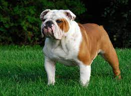

Overview
Kind but courageous, friendly but dignified, the Bulldog is a thick-set, low-slung, well-muscled bruiser whose 'sourmug' face is the universal symbol of courage and tenacity. These docile, loyal companions adapt well to town or country. You can't mistake a Bulldog for any other breed. The loose skin of the head, furrowed brow, pushed-in nose, small ears, undershot jaw with hanging chops on either side, and the distinctive rolling gait all practically scream 'I'm a Bulldog!' The coat, seen in a variety of colors and patterns, is short, smooth, and glossy. Bulldogs can weigh up to 50 pounds, but that won't stop them from curling up in your lap, or at least trying to. But don't mistake their easygoing ways for laziness'¿Bulldogs enjoy brisk walks and need regular moderate exercise, along with a careful diet, to stay trim. Summer afternoons are best spent in an air-conditioned room as a Bulldog's short snout can cause labored breathing in hot and humid weather.
Characteristics
- Friendly and tolerant nature
- a stocky build and determined expression
- An easy-going breed with a gentle nature.
- they are sweet-natured and extremely loyal.
Care
A bulldog's coat is very fine and short, so they only require brushing once a week. The more you brush, the less hair you'll find on your furniture and clothing. More important than brushing is keeping his face clean and dry—with so many wrinkles, they can get irritated or infected if not cared for properly. Trim his nails once a month or so, until you can't hear him click-clacking on the floor. Weekly or daily teeth brushing will prevent future vet visits down the line. While the bulldog doesn't care much for exercise, he still needs it to maintain a healthy weight, as he is prone to weight gain. A daily walk around the neighborhood (during the cooler hours) will wear him out, as will a quick play session. He would much rather be cuddling with his child companions or taking a nap in the AC. Consult your vet about the right food for your bulldog, and monitor that food intake to prevent weight gain. Bulldogs are better off with two measured meals a day rather than leaving the bowl out all the time. If nobody stopped them, they'd keep eating. Because they can be lazy, bulldog owners need to have focus and patience with their puppy. "The best training for a bulldog is positive encouragement, and engagement when they have the energy and interest in it," Hodgson says. "With bulldogs, nothing should ever be forced, repetitive, or heavy handed, lest they become, well, bullish." Keep training sessions short to ensure you have their full attention, and they'll be able to retain information better. Once he learns something, he will remember it, especially if treats are involved.